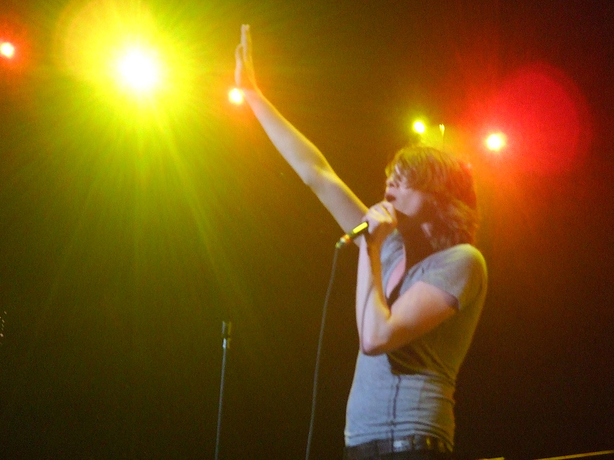

The Academy Is... was an American rock band from Chicago, Illinois, formed in 2003. Before disbanding, they were signed by the Decaydance imprint of the Fueled by Ramen label. They were originally known as "The Academy", but added the "Is..." in 2004 to avoid legal complications with other established bands already under that name. The band released three studio albums,
Almost Here, Santi, and Fast Times at Barrington High, and four EPs. The band announced its break-up on 8 October 2011. In May 2015, lead singer William Beckett announced that the band would reunite at Riot Fest 2015 in Chicago. In addition the core members of the band, William Beckett, Mike Carden and Adam Siska, as well as
Andy Mrotek and Ian Crawford (both of whom had not originally been part of the band), reunited for a farewell tour that took place during December 2015.
William Beckett (singer) and Adam T. Siska's (bass) plans for starting a band together came to fruition on March 4, 2003 recruiting Mike Carden (guitar) after his former band, Jodie, which had members of Victory records act June, broke up then eventually adding AJ LaTrace as a lead guitarist and Michael DelPrincipe (Little Mike) as a drummer. They recorded their self-titled debut EP, The Academy (2004), for the Chicago-based label LLR Recordings. LLR Recordings had previously released Beckett's solo project Remember Maine's debut album The Last Place You Look in 2002 and Mike Carden's solo folk album in 2003. The EP was recorded in Villa Park, IL at The Gallery of Carpet by producer Brian Zieske. Pete Wentz from Fall Out Boy heard it and was impressed. The label Fueled by Ramen immediately signed the band.
Almost Here (2005-2006)
In 2004 the band headed to Florida to record their Fueled by Ramen debut Almost Here, produced by James Paul Wisner, who has worked with Dashboard Confessional, Something Corporate, Further Seems Forever, and Underoath. After recording the album and doing a summer tour, the band underwent a lineup change. Thomas Conrad, formerly of Chicago local band 5o4plan, replaced LaTrace as the second guitarist/backing vocalist and Andy Mrotek, formerly of Last Place Champs, replaced DelPrincipe as the drummer, and lastly Hayden Cler (JigGsaw, the Junior Varsity) on guitar. Andy Mrotek and Thomas Conrad are listed in the liner notes, but were added to the band after the recording of Almost Here to replace DelPrincipe and LaTrace, respectively. They hit the road hard, touring with Fall Out Boy, Something Corporate, Midtown, Matchbook Romance, Motion City Soundtrack and Armor for Sleep. The album was released on February 8, 2005 and the following summer, the band embarked on their first headlining tour alongside Plain White T's, Days Away and June. On Billboard's charts Almost Here peaked at No. 7 on Top Heatseekers, No. 16 on Independent Albums, and No. 185 on The Billboard 200. Later on in 2005, while Pete Wentz was finishing up work on Fall Out Boy's second album From Under the Cork Tree and his "latest side project" with John Janick of Fueled by Ramen, he discovered Panic! at the Disco and helped them release their debut album A Fever You Can't Sweat Out through his label Decaydance. The Academy Is... was also signed to Decaydance that year.
On October 26, 2006, The Academy Is... had announced via the blog on their official website that Thomas Conrad and the band had parted ways. Michael Guy Chislett joined the band to replace Conrad on guitar.
Santi (2007)

William Beckett performing on the Honda Civic Tour 2007.
While touring as a main act on the 2006 Warped Tour, the band began the process of writing songs for their second album. Once finished, the band flew to Los Angeles to record their record with Butch Walker. As of December 23, 2006, the band had officially finished the recording process and the album, entitled Santi, was released April 3, 2007 on the Fueled By Ramen label. The release of this album was listed on Blender's 25 reasons to love 2007. On January 26, 2007 a sample of "LAX to O'Hare" was released on the band's AbsolutePunk profile. The album peaked at No. 32 on the Billboard 200.
The band went on to release the song "We've Got a Big Mess on Our Hands" as the album's first single, before releasing the album on April 3, 2007. Fall Out Boy, +44, Cobra Starship, and Paul Wall all joined the band on the 2007 Honda Civic Tour, after which the band moved on to the "Sleeping With Giants" tour with support from The Rocket Summer, Armor for Sleep and Sherwood. Partly through the tour, labelmates Cobra Starship were added to the support. The tour ended on November 24, 2007 in Chicago.
Fast Times at Barrington High
The band's third studio album, Fast Times at Barrington High, was released on August 19, 2008 through Fueled by Ramen. The title refers to the high school William Beckett, Hayden Cler, Adam Siska, and videographer Jack Edinger attended. The first single, "About a Girl," was added to the band's MySpace page on July 15, 2008 and was subsequently made available from various download sites. The lead model in the official music video for "About a Girl", Brittany Moser, also went to Barrington the same time Adam and William were in high school. On August 25, 2008 "About a Girl" was played on The Hills (season 4, episode 2). Soon after Hayden Cler left to pursue That's No Moon. They also released the songs "Summer Hair = Forever Young" and "His Girl Friday" of FTABH on their MySpace page and PureVolume page. The album made it onto Rolling Stone Magazine's 50 Best Albums of the Year ranked as No. 46. It peaked at No. 17 on The Billboard 200.
Lost in Pacific Time EP and breakup (2009-2011)
On William Beckett's Twitter page, it was said The Academy Is... have finished recording their new EP, Lost in Pacific Time: The AP/EP. It was released on September 22, 2009 on iTunes, and was sold on the AP Fall Ball Tour. A limited number were also sold on their webstore The track "I'm Yours Tonight" was released on the band's Myspace page. Another track, "Days Like Masquerades" was played at an anti-suicide benefit at Barrington High School, in Barrington, Illinois. Another song, "Sputter" (featuring Jack's Mannequin singer Andrew McMahon), streamed on Banana's Music club, linked by both William and Pete Wentz via Twitter on September 21.[citation needed] On September 29, 2009, Pete Wentz announced via Twitter that TAI would replace The All-American Rejects for the St. Louis date of the Blink-182 tour, due to an injury to the AAR lead singer Tyson Ritter.
On May 24, 2011, the band made an announcement on their official website that said that bandmates, Andy Mrotek and Michael Guy Chislett, were leaving the band to pursue their own musical careers. There has reportedly been no hard feelings during this decision. William Beckett also stated that the three remaining members would be entering the studio soon to record their fourth full-length album. On October 8, 2011, the band announced their disbanding on their official Facebook page, stating that they had "decided to go their separate ways" but "though we may not be together, you can look forward to hearing new music from each of us".
Andy Mrotek has been continuing his artistry and his solo project, The Animal Upstairs. Adam Siska has become the touring bassist for Say Anything and Carly Rae Jepsen. Lead singer William Beckett announced he would be releasing his debut solo EP in 2012. On March 13, 2012 he released his first solo single "Compromising Me" and on April 17, 2012 he released his new EP Walk the Talk. Beckett released his sophomore EP, Winds Will Change and his third, What Will Be, dropping on the 30th of October, 2012. Genuine & Counterfeit is the debut solo full-length album by William Beckett. The album is the first full-length released by William since the break-up of his band The Academy Is.... It was released by the NY based independent record label Equal Vision Records on August 20, 2013 and it was produced by Marc McClusky. The Academy Is...'s website (www.theacademyis.com) currently redirects to the band's Facebook page and is occasionally updated by their former label, Fueled By Ramen.
Reunion and Almost Here Tenth Anniversary Tour (2015)
On September 12, 2015, The Academy Is... reunited to play their debut album, Almost Here, cover-to-cover at Riot Fest Chicago, an annual outdoor music festival. Former lead guitarist Michael Guy Chislett was the only original member who did not join the reunion. Ian Crawford, known for his roles in The Cab, Panic! at the Disco and Never Shout Never filled in for Chislett. In December 2015, the band embarked on a sixteen-date tour throughout the United States, in which they played Almost Here cover-to-cover and five additional songs from their back catalog. The band had their final show at The Observatory North Park in San Diego, California on December 30, 2015. As of August 2016, no announcement has yet been made regarding any future concert tours or new music, nor has any formal breakup been announced.